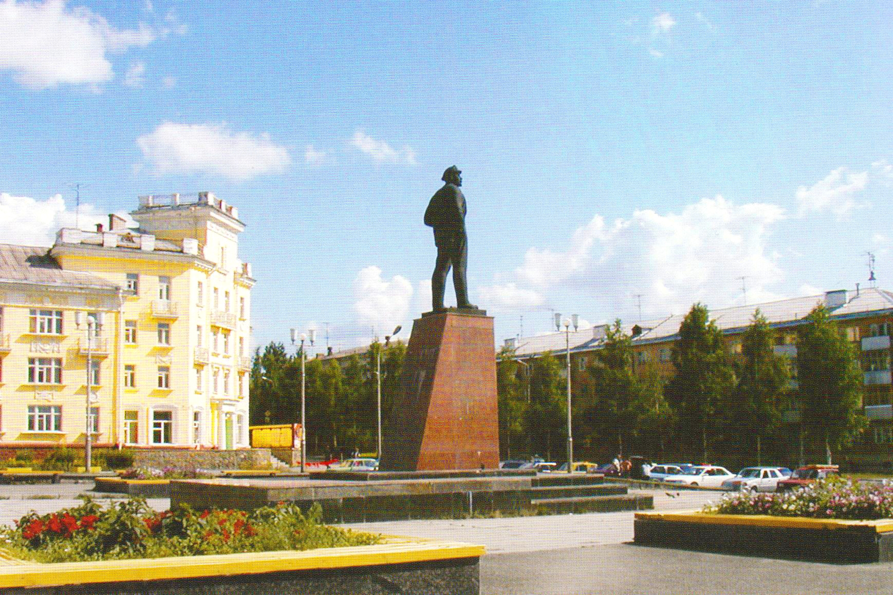

Памятник Ленину
Влади́мир Ильи́ч Улья́нов (псевдоним Ле́нин; 10 (22) апреля 1870, Симбирск — 21 января 1924, усадьба Горки, Московская губерния) — российский революционер, советский политический и государственный деятель, создатель Российской социал-демократической рабочей партии (большевиков), один из главных организаторов и руководителей Октябрьской революции 1917 года в России, первый председатель Совета Народных Комиссаров (правительства)РСФСР, создатель первого в мировой истории социалистического государства.
Марксист, публицист, основоположник марксизма-ленинизма, идеолог и создатель u, основатель СССР, первый председатель СНК СССР. Сфера основных политико-публицистических работ — материалистическая философия, теория марксизма, критика капитализма иимпериализма, теория и практика осуществления социалистической революции, построения социализма и коммунизма, политэкономия социализма.
Мнения и оценки исторической роли Владимира Ульянова (Ленина) отличаются крайней полярностью. Вне зависимости от положительной или отрицательной оценки деятельности Ленина, даже многие некоммунистические исследователи считают его наиболее значительным революционным государственным деятелем в мировой истории. В. Лавров утверждает, что произведения В. И. Ленина занимают первое место в мире среди переводной литературы; современный индекс переводов ЮНЕСКО даёт 7 место.